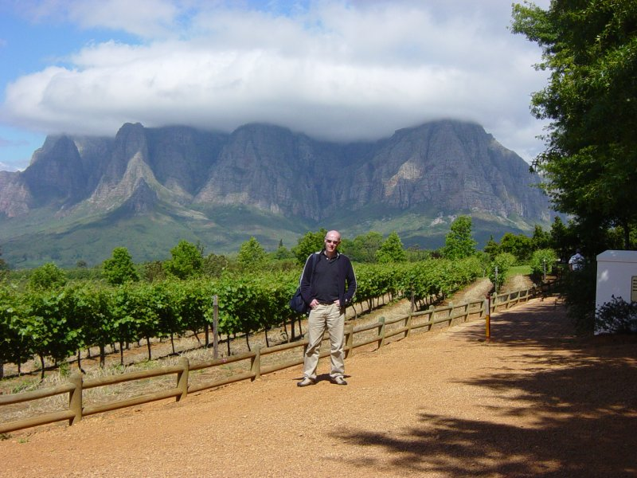
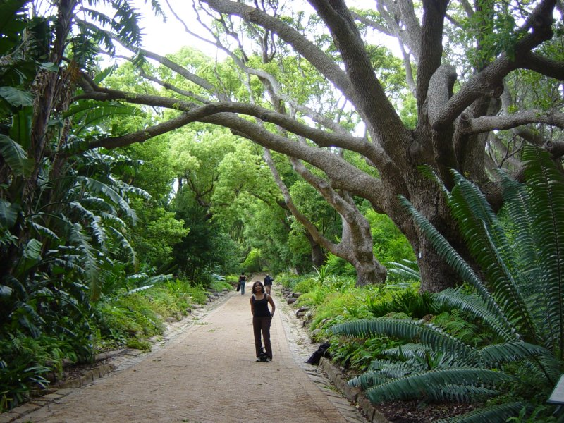

Had planned to go back to Boulders beach but it was a rainy day so decided not to get up early after all.
Instead we drove and parked near Edgars department store on Aderley Street. I purchased 3 pairs of shoes for 1200R.
We then drove to Klein Constantia to taste their sauvignon blanc which was lovely, the semillion (not so good) and the Vin de Constance 2001 (must be the best dessert wine I’ve had to date). We bought a bottle of sauvignon blanc and 3 bottles of the vin de constance which all came to about 800R. Had some trouble getting all this stuff in our suitcases and contemplated purchasing another suitcase. Drove to Buitenverwachting winery for some lunch. While waiting for the restaurant to open we emptied our suitcases and repacked from scratch and successfully managed to pack everything!
The restaurant was very pleasant. Served with a complementary grilled line fish of the day (yellow tail, which was quite meaty and flavoursome). Also served a selection of breads and spreads which were very nice. I chose a trio of ostrich for main course, yamini went for chicken confit. Food was excellent, service excellent. Also a lovely view of the vineyard.
Drove to Groot Constantia (winery) for a quick look in their shop, did not stay long. Then drove to Kirstenbosch and spent some time in the shop and gardens before setting off for the airport. Arrived at the airport and dropped car off at approx 5pm. Checked in, no queues! After shrink wrapping our luggage for 25R per suitcase I claimed back 130R for tax on shoe purchases. Had a couple of hours to check out the shops. Plane boarded 20:30 for 20:40 flight.
Watched Pirates of the caribbean, dead mans chest. Flight arrived approx 6:30 following morning.
Archive for the ‘Cape Town’ Category
Friday 24th November 2006
Friday, November 24th, 2006Thursday 23rd November 2006
Thursday, November 23rd, 2006{kind=link}
Drove to waterfront and parked up for 10am appointment for the Robben Island tour. Catamarran to the island took 1hour.
Saw seals in the harbour. Also saw penguins floating in the sea on the way. On arrival to the island we transferred to a tour bus for a 40 minute tour of the island. The driver was very informative and also very entertaining. Saw bontibock and an oyster catcher.
We then transferred to our guide on foot, he was called Spark and was an inmate for 7 years. We viewed the cell where Nelson Mandela was kept and also Spark’s cell room which would have housed 80 prisoners. Nelson’s cell was pretty small and he was not allowed to talk to anyone in all the years that he was there.
Got back to the waterfront at approx 14:20. Stopped for another cinnamon pancake with icecream and coffee with cream on the waterfront.
Drove to the District Six museum. Arrived approx 3:15pm, stayed about 30 mins.
Stopped at market at Capetown railway station, purchased a pair of shoes for 130R. Yam bought two pairs of shoes for 100R and 130R and also a bag for 50R. Then drove to waterfront and walked around craft market, thought it a little too expensive. Walked around the mall and surrounding shops and purchased some gifts.
Went back to the hotel to get ready for our meal at the revolving restaurant at the top of the Ritz. Meal was at about 8:50, finished about 11pm.
Service was slow, maybe because we had a late table. Food was pretty good though not outstanding. The restaurant completes a revolution in 60 minutes, we went round twice. I had crocodile and springbok carpaccio for starter, yamini had beetroot carpaccio. I had gemsbok for main, Yamini had beef steak. I passed on dessert but had a dessert wine while Yamini had creme caramel.
Also had a bottle of riesling (82R) but it was not that good.
Wednesday 22nd November
Wednesday, November 22nd, 2006Breakfast approx 7:00am.
Drove to Simons Town via M3 and Fish Hoek. Arrived approx 8:30am at Boulders beach to see the penguins.
Beach was quiet at this time. Had a swim in the sea with the penguins, sea was probably 14C so pretty refreshing.
Left at about 10:00 by which time it was pretty busy.
Drove to Cape Point National Park, stopped at Rooikrans view point where we spotted a killer whale and a southern right whale (with aid of binoculars). Also saw some lizards and a dassie (small furry creature, whose nearest relative is the elephant).
Drove on to the Cape Point, got the funicular to the top to appreciate the views and then walked back down.
Drove to the Cape of Good Hope, the most south westerly point of Africa. On way back took the circular drive and then took the left turn before M65 which is a long road and turned out to be a dead end so drove back, saw a turtle crossing the road on the way back which kind of made it worth it. Then took the M65 stopping at various viewpoints including Chapmans point and chapmans peak in Hout Bay.

Continued on the M6 along the Atlantic Ocean past Camps bay and Clifton beach to our hotel.
Had a beer at hotel and then took a taxi to Long Street where we took a walk to decide where to eat.
Approached by self employed tourist helper, tipped 10R!
Had a beer in a bar on long street and then ate at Five Flies. We both had the mussels for starter. I had springbok again for main and yamini had sole.
I had malva pudding for dessert (again) and yamini had a chocolate pudding. Had a bottle of Klein Constantia Chardonnay 2005 which was not particularly notable.
Tuesday 21st November 2006
Tuesday, November 21st, 2006
After breakfast walked to ATM & supermarket.
Drove to Vergelegen, approx 45km from Cape Town along the N2. Drive took about 30 minutes. The N2 is lined with shanty houses.
Entry to Vergelegen was 10R per person. 1 hour tour of winery cost 10R each.
Wine tasting from 2R to 10R depending on wine plus 1R for biscuits. Tasting was at our own pace sitting outside at a table and was very relaxed with no pressure to purchase.
Purchased two bottles of the Sauvignon Blanc 2005 which had a very fruity smell and good lingering taste. These cost 65R each.
Vin de florence 2006 was too acidic tasting. I wasn’t particularly fussed with the Chardonnay 2005 or the Chardonay Reserve 2004.
Then drove to Delaire for lunch, driveway up to Delaire is lined with trees through a vine field, a great entrance for a vineyard. Spectacular views of the mountains from our table. I had carpacio of springbok for starter and Yamini had orange and butternet soup. I then had Ostrich steak for main course. Yamini had Bobotie. Total was 300R. inc 2 x grapetizers. Food was very good.
Drove up the road to Thelema which has a very long driveway with a very dramatic backdrop of mountains.Tasting at Thelema was more rushed than the Vergelegen experience. The Merlot was very nice and purchased a bottle for 90R.
Drove to Franschoek, a very picturesque town. Not enough time for further tastings.
Drove back to Cape Town via N1.
Walked down the road to find a place to eat. Stopped at Harveys at the Winchester Mansion hotel on the waterfront.
Service here was excellent as was the food. We were served with a complementary appetiser in the form of aubergine rissotto. For starter I had a poached pear and grated parmesan with blue cheese dressing on salad leaves which was gorgeous and more of a dessert than a starter. Yamini opted for carrot and ginger soup. For mains I had line fish of the day (blue fish) grilled with butternut risotto with a lemony sauce. Yamini had baked blue fish with basil mash.
For wine we had Constantia Uitsig Sauvignon Blanc 2005 which was very fruity and refreshing.
For dessert I had Grand Marnier Souffle which was absolutely gorgeous. Followed up with a Constantia Klein dessert wine! Total 464R plus 100R tip for our waiter who was very attentive and entertaining!
{kind=link}
Monday 20th November
Monday, November 20th, 2006
Today is my birthday!
Had breakfast in our hotel at 8:30am. Left for Table Mountain cable car at about 9:30am.
Cable car which has a revolving floor takes about 5 minutes or so to get to the top.
The top of the mountain was covered in cloud and very cold and windy although it cleared later on.
We spent an hour or so looking for dassies but were disappointed. We spotted some small birds with very long beaks curved downwards. There is also a large variety of plants, in particular heathers.
We took a guided tour at 12:00pm. The tour guides were very interesting, apparently the dassies are much rarer now. The guides had not seen any for several weeks and speculated that this maybe because of the fires or because of tourists feeding them.
The clouds cleared and we then got some great views of Cape Town.
We then drove to Mount Nelson for afternoon tea. Arrived 1:30pm. Afternoon tea begins at 2:30pm.
Had a coffee while waiting. Outstanding selection of cakes and sandwiches to go with our tea! It is all done as a buffett so you can hone in on the cakes of your choice. Cost was just 100R each (about �7.00).
We then drove to Kirstenbosch gardens which are lovely with a spectacular backdrop of the mountains. Unfortunately the heavens opened up and we got soaked.
In the evening we went to Five Flies for dinner. We had a bottle of Klein Constantia Rhine Riesling 2006 (165R) which was rather bland (maybe some celery?), acidic.
My starter was asparagus with a nice light sauce and peas, which was good.
Yamini had beef carpacio with parmesan and caper sauce - very nice.
My main course was springbok with prickly pear jus and mashed gem squash - perfectly cooked slivers of meat and rather generous as well, sauce was lovely.
Yamini had slow roasted duck with oriental jus which was very nice.
I had traditional malva pudding with caramel and ice cream for dessert - lovely!
Yamini had creme brulee with vanilla pod flavoured icecream.
Had a glass of Constantia dessert wine which was gorgeous, slightly orangey we thought.
Bill came to 630 R (approx �50)
Caught a taxi back to hotel…
{kind=link}
19th November 2006
Sunday, November 19th, 2006Arrived Cape Town 09:30 (SA time).
Cape Town airport is fairly pleasant, Hertz car hire is easy to find. Cleanest rental car I have ever hired (it was a white Toyota Corolla).
The drive from the airport to the Hotel Ritz was easy enough and took about 30 minutes. You drive on the left in South Africa and the signage is very good. Arrived at the hotel at 12:00pm. Tipped porter 20R for luggage.
Its a very hot day, must be 30C.
The room in the Ritz was very nice with big windows a good view of the sea and Robben Island.
Relaxed in hotel for an hour (ordered cheese on toast and big plate of chips for 50R) and then got a taxi (40 R) to the waterfront.
Robben Island tours were all booked up for the next three days so we booked a tour for Thursday 10am for 150Rand each.
Bought a hat for 65 R as worried about burning my bald head.
Visited the Ice lounge (entry 50 R each inc free coke).
Visited the Two Oceans Aquarium (70 R each). This is a very good aquarium with some impressive tanks, unusal specimens. One cylindrical tank had just ‘finding nemo’ fish. Another massive tank had massive sea weed plants, penguins and large fish.
Other specimens included sharks, seals, jelly fish, giant spider crab and oyster catcher bird.
Walked back to waterfront through the craft market.
Yamini had a leg wax for 120 rand inc tip.
Stopped for coffee with cream & pancake & icecream at the cafe outside entrance to craft market(70rand) - delicious!
Walked to Victoria Wharf Shopping Centre, Yamini bought my birthday present - some Oakley Why 8.2 sunglasses (1760rand).
Booked a table for 9:30pm at the Baia seafood restaurant.
Got a cab back to hotel (approx 18:30). Attempted to book revolving restaurant at top of the Ritz. Had to settle for 20:30 Thursday night.
Got a taxi to waterfront for meal at Baia at 21:00.
Our table had a good view of the harbour.
I had mussels in a Riesling sauce which was delicious.
Main course was trio of game (kudo, springbok and ostrich)- basically a mixed grill. It was pretty good although most of the food during the rest of the holiday surpassed it. Yamini had a duck salad followed by king klip fillet with tomato rice. We did not have room for a dessert (service was a bit too slow). We had a bottle of Vergelegen Sauvignon Blanc 2005 (142R)with the meal which was very good. Total cost was 493R.
Got taxi back to hotel approx 11:30pm.
18th November 2006
Saturday, November 18th, 200619:15 boarded plane and spent an hour negotiating with other passengers as more people than not did not have seats near their loved ones. I swapped seats 3 times. Otherwise we were pretty well looked after, food was above average, average legroom for economy.
Inflight entertainment allowed pausing, I watched The devil loves prada (7.4/10).
20:15 flight with South African Airways to Cape Town arrived 09:30 SA time, ahead of schedule.